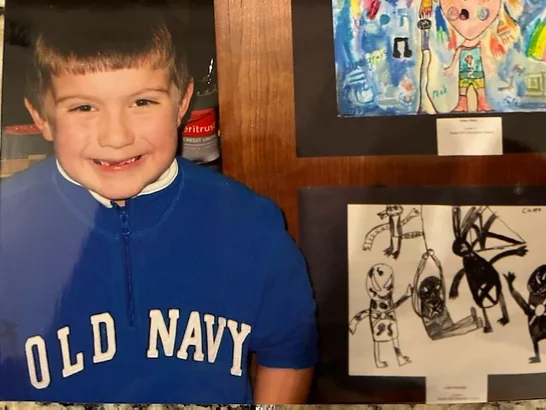

Me...

I grew up in the Midwest of Lawrence, Kansas. It's a modest home, but in there you had room to dream.
And so, I've lived most of my life compelled to create things.
With big ideas comes lots of learning, whether it be the art of video editing,
photo editing, photography, writing, animating, or programming.
I've continued to follow that simple dream to be able to make,
or simply contribute to, cool, novel, and useful things that people will find the purest joy in,
just as the creators before me made things that brought so much to my imagination, my little city of dreams.